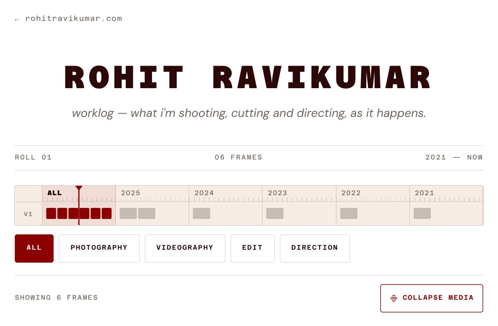
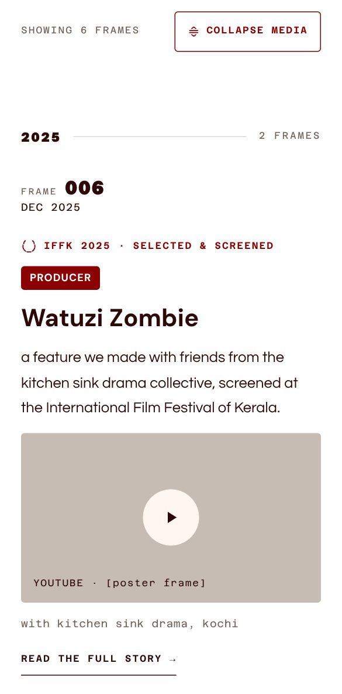
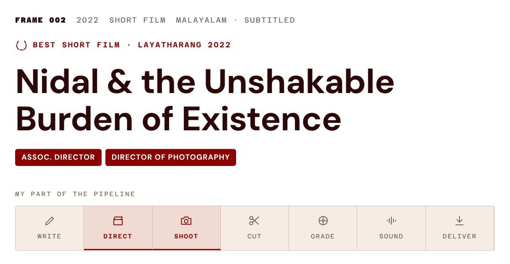

Rohit, my brother, shoots, edits and directs. His site rohitravikumar.com shows who he is; the worklog will show what he's working on now. Day 1 was a first mockup: easy to browse on a phone, with reels, YouTube and Flickr embedded cleanly, and updated by him from Telegram.
What's in the mockup
Same colours and fonts as his main site.
A feed of numbered projects, newest first.
A year timeline and role filters for browsing.
A button to collapse media into a quick list of credits.
Full story pages only for posts with a longer write-up.

The top of the feed: year timeline, role filters, collapse media.

On a phone.

A story page, with his part of the pipeline.
Rohit's feedback
Clean, suited to prospective clients, and posting from Telegram would be friction-free for him.